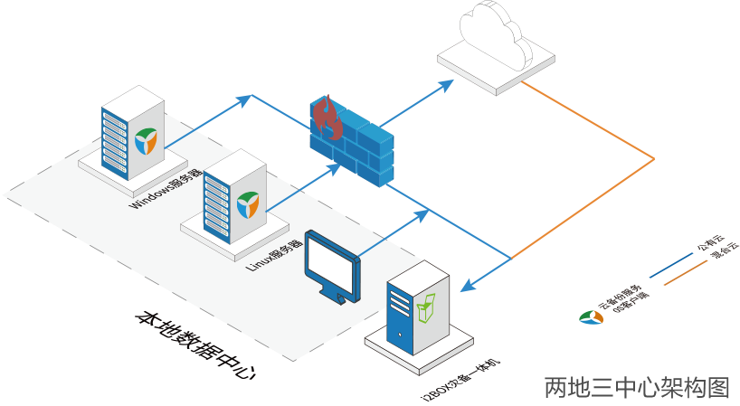
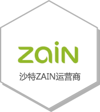

方案简介
伴随着业务量的激增和业务业务连续性重要性的提升，传统的单数据中心已难以抵御地域性灾难及突发事件对，企业数据的安全和业务连续性，而只做本地的数据冗余保护或容灾建设，已不能规避区域性灾难对企业数据的破坏。因此包括再同城备份中心进行应用级容灾，在异地灾备中心作为全部数据级灾备和部分应用级灾备的两地三中心架构，逐渐成为当下最有效的数据及业务保护架构之一。
两地三中心定义
容灾产品矩阵
两地三中心七大优势
全图形化监控及业务操作管理，所图即所见。
提供政务云迁移与业务级别容灾解决方案，支持软件定义及基于云平台的两地三中心模式。
良好的兼容性。支持多个操作系统、应用软件、数据库、中间件的异构搭建。
按需使用，灵活扩容。
优异的远距离数据传输技术，带宽占用低，且实现了数据传输加密。
有多个大型行业客户成功案例，有强大的本地运维团队，保证7＊24小时的高效服务。
对原有网络、存储等架构以及业务系统改动较小，不影响新旧系统之间的相互访问。
数据层
1、生产数据、操作系统、应用环境、软件配置在线无停机迁移至 容灾中心
2、非结构化文件数据试试双活复制、对带宽占用仅有传统存储复制的20%
3、数据库语言级的实时数据同步，双活容灾、便捷切换
4、容灾段数据可以在线查看，定时对比生产端与在北端数据，确保数据一致性
5、数据复制过程、状态，进度全图形化展现
业务层
1、对负载业务系统提供更有效支持，适应用户现阶段应用发展方向
2、多种监控方式选择， 确保对生产端故障能够第一时间响应
3、能够自动化、流程化的启动容灾中心业务系统，确保切换的速度与成功率
4、本地/异地/云端应用级的高可用保护

客户案例
